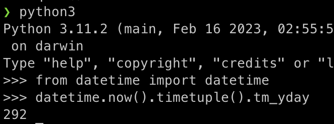
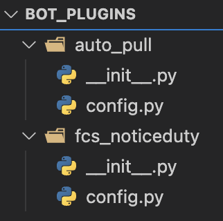

插件编写 II¶
本文会介绍一些与本地数据无关的纯逻辑插件。
定时提醒值班¶
需要准备：
- 在哪个群发送艾特通知？需要知道群号
- 艾特哪些人？以什么顺序？需要知道大家的 QQ 号
然后你要确定怎么排班，是只工作日排班还是每天都排班？
-
如果是只工作日排班，一个可能的逻辑如下
# 假设今天是星期三，假设你在星期三定时发送点之前要做完 # WXQ表示星期X值班的同学的QQ号 people = [W3Q, W4Q, W5Q, 0, 0, W1Q, W2Q] today = 今天是今年第几天(变量) start = 今天是今年第几天(常量) # 那么当today变化时，负责排班的同学的序号是 on_duty = (today - start) % 7 # 判断是工作日才发送 if people[on_duty] != 0: send(people[on_duty])
-
如果每天都排班，一个可能的逻辑如下
# WXQ表示星期X值班的同学的QQ号 people = [W1Q, W2Q, W3Q, W4Q, W5Q, W4Q, W5Q] day = 今天是星期几 on_duty = day - 1 # 判断是工作日才发送 send(people[on_duty])
一个示例的 __init__.py 文件如下：
from nonebot import get_bot, require
from nonebot.permission import *
from nonebot.log import logger
from datetime import datetime
try:
scheduler = require("nonebot_plugin_apscheduler").scheduler
except BaseException:
scheduler = None
logger.opt(colors=True).info(
"已检测到软依赖<y>nonebot_plugin_apscheduler</y>, <g>开启定时任务功能</g>"
if scheduler
else "未检测到软依赖<y>nonebot_plugin_apscheduler</y>，<r>禁用定时任务功能</r>"
)
group_id = "114514" # 发送的群号
goodnight_onduty = [1234567, 2345678, 3456789, 4567890, 5678901, 6789012, 7890123]
async def goodnight():
# 获取今天是今年第几天
weekday = datetime.now().timetuple().tm_yday
onduty = goodnight_onduty[(weekday - 289) % len(goodnight_onduty)]
# 艾特并发送，使用CQ码
await get_bot().send_group_msg(group_id=group_id, message=f"提醒同学明天值班～ [CQ:at,qq={onduty}]")
if scheduler:
scheduler.add_job(goodnight, "cron", hour=23, minute=30, misfire_grace_time=60)
这里面 289 就是上面提到的 start 常量，可以通过 Python 终端简单运行代码获得。

何时发送通知是最后一个语句控制的，hour=23, minute=30 表示 23 点 30 分发送定时通知。
现在插件文件夹的文件结构如下，可供参考。

本地提交、同步后，我们给机器人私聊发送「pull」，让它更新就 OK。